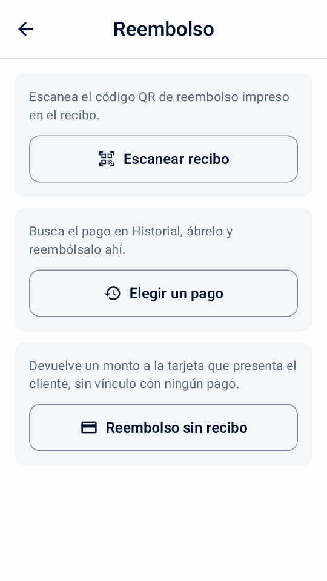
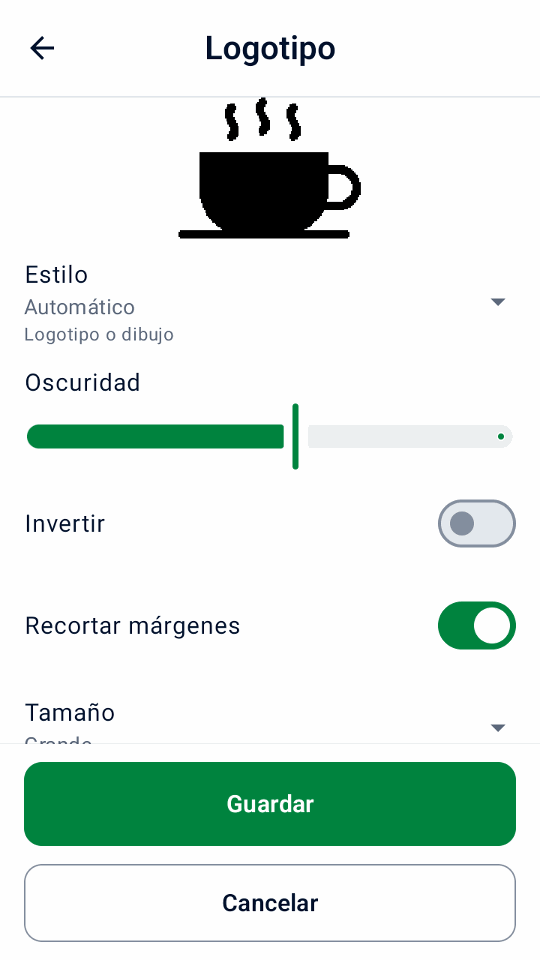
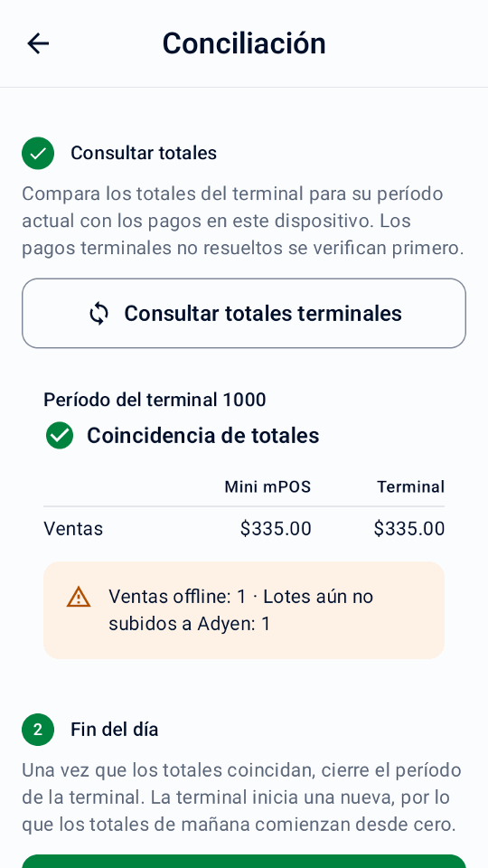

Guía
Usando Mini mPOS
Prepara tu negocio, acepta pagos, entrega recibos y cierra el día. Agrega opciones de pago cuando las necesites.
Prepara tu negocio
Preparar productos, impuestos y acceso del personal.
Completa la configuración de conexión antes de aceptar pagos reales.
Establecer la moneda y los impuestos
- en Configuración › Pagos, elija un Moneda que su cuenta mercantil acepta para pagos en persona.
- en Configuración › Impuesto, verifique las tarifas, si los precios incluyen impuestos o si los impuestos se agregan al finalizar la compra, y la tarifa predeterminada para productos nuevos.
Después de la configuración, Configuración › Pagos puede ofrecer la moneda de liquidación principal de la cuenta de comercio según Adyen. Es una sugerencia, no una confirmación de que la cuenta acepte pagos en esa moneda. Al elegirla se abre la misma revisión de precios; conservar la moneda actual no cambia nada.
Cada producto tiene una tasa impositiva; Utilice una tasa del 0% para artículos libres de impuestos. Apagar Cobrar impuesto deja de cobrar impuestos pero mantiene las tarifas.
importante
Cambiar la moneda mantiene los números en tus precios; no los convierte a un tipo de cambio. Verifique los precios de sus productos después.
Agregar productos
- Abra Configuración › Productos y toque +.
- Introduzca un nombre, precio y tasa impositiva. Opcionalmente agregue una categoría y un código de barras, escrito o escaneado.
- Para un depósito, encienda Producto de preautorización para que aparezca sólo en las preautorizaciones.
Configurar los PIN del personal
En Configuración › Seguridad, toque Establecer PIN para proteger Configuración y Productos con un PIN de administrador, y elija cuándo se vuelve a bloquear el acceso. Toque Establecer PIN de gerente para las acciones protegidas; el PIN de administrador no las autoriza. Más adelante, use Cambiar PIN de administrador o Eliminar PIN de administrador.
En Permisos de gerente, elija qué acciones requieren el PIN de gerente. Las acciones similares comparten un interruptor; los reembolsos con referencia, sin recibo y en efectivo tienen uno propio. La aprobación del gerente en estas guías sigue estas opciones.
Sin PIN de administrador, todas las acciones están abiertas. Una vez que existe, las acciones protegidas quedan bloqueadas hasta establecer un PIN de gerente. Eliminar el PIN de administrador también elimina el PIN de gerente; las opciones de permisos se conservan. Varios PIN incorrectos bloquean el ingreso por un tiempo.
Atiende a tus clientes
Realizar un pago con tarjeta
- En Inicio, toque Nueva venta. Toque productos, toque Escanear código de barras, o añadir un Artículo personalizado.
- Toque Cobrar. Verifique los artículos, impuestos y total, y complete los campos de referencia o correo electrónico.
- Toque pagar. El terminal, o la aplicación Adyen Payments con Tap to Pay, solicita el pago al cliente.
- Espere el resultado. No inicies otro pago hasta que aparezca.
- Entregue al cliente un recibo con Imprimir recibo, Enviar recibo por correo o Compartir recibo, a menos que se haya entregado automáticamente.
Nota
Según el terminal y su cuenta de comerciante, los clientes insertan o acercan una tarjeta, o acercan un teléfono o un reloj. Con Tap to Pay, la aplicación Adyen Payments los guía.
Advertencia
Resultado desconocido no significa que el pago haya fallado. Verifique el pago original antes de volver a cargar.
Las referencias del cliente y el guardado de tarjetas son opcionales; consulte referencias y tarjetas guardadas. Para dividir la cuenta o aceptar efectivo, tarjetas de regalo o vales de comida, consulte los flujos de pago opcionales. Para que los clientes paguen en su propio teléfono, use un enlace de pago. Si se rechaza un pago, consulte pagos rechazados.
Reembolsar o cancelar un pago
- Reembolsar
- Por un pago cobrado. Devuelve todo o parte del dinero.
- Cancelar (anular)
- Para un pago retenido que no ha sido capturado: toque Cancelar preautorización por un depósito, o Cancelar pago para una venta Esperando propina. Esto libera la retención.
Para reembolsar:
- En Inicio, toque Reembolso y luego Escanear recibo para escanear el código QR de reembolso del recibo, o Elegir un pago para abrir la venta original en Historial.
- Elija un reembolso completo, un importe o artículos individuales. Los reembolsos de artículos necesitan la venta original de este dispositivo.
- Confirme el reembolso e ingrese al Gerente PIN si se le solicita.


Estos reembolsos están vinculados a su pago original. Los enlaces de pago pagados se reembolsan en el Área de Clientes.
Una venta dividida se reembolsa a sus pagos originales. Mini mPOS propone cuánto devolver a cada tarjeta y cuánto efectivo entregar; toque un pago para ajustarlo. Primero se reembolsan las tarjetas, una a una, y luego el efectivo, que requiere un PIN de gerente. Si no se acepta un reembolso con tarjeta, no se devuelve nada más; abra la venta para revisar lo pendiente.
Una venta con un recargo informado devuelve primero los importes de compra, luego la propina y después el recargo; un reembolso total incluye el recargo restante.
Reembolso sin recibo
Use Reembolso sin recibo solo cuando no haya un pago que reembolsar, como una devolución sin recibo. Devuelve un importe a la tarjeta que presenta el comprador y no está vinculado a ningún pago, por lo que Mini mPOS no puede comprobar lo que se pagó. Usted es responsable de los reembolsos erróneos o repetidos.
Pida a Adyen que habilite los reembolsos sin referencia para la tienda y fije el límite de reembolso de Adyen en el Customer Area. Luego, en Configuración › Pagos, active Permitir reembolsos sin recibo, fije su propio Límite de reembolso y establezca un PIN de gerente. Adyen no permite estos reembolsos en algunos países ni para billeteras con código QR; Mini mPOS comprueba la tienda que Adyen verificó para el terminal.
Toque Reembolso sin recibo, ingrese el importe, elija un motivo, confirme y apruebe con el PIN de gerente; después el comprador presenta la tarjeta. Reembolso aprobado significa que el adquirente lo aprobó de inmediato; Reembolso solicitado significa que Adyen recibió la solicitud. El historial, los recibos y el informe diario muestran estos reembolsos por separado; concílielos manualmente.
Si el soporte de Adyen configuró un retraso de reembolso, active Retraso de reembolso configurado. Mientras dure el retraso, abra el reembolso y toque Cancelar reembolso; luego revise el Customer Area para saber si se detuvo.
Adyen: Unreferenced refunds · Adyen: Cancel an unreferenced refund
importante
Reembolso solicitado significa que Adyen recibió la solicitud, no que el cliente tenga el dinero. Comprueba el resultado final en el Área de Clientes. Si se desconoce el resultado de un reembolso, compruébalo antes de volver a intentarlo.
Imprima, envíe por correo electrónico o comparta recibos
Desde un resultado de pago o una entrada del Historial, toque Imprimir recibo o Enviar recibo por correo. Las tabletas y los teléfonos también ofrecen Compartir recibo, que envía una imagen a través del menú compartir de Android. Para imprimir se necesita un terminal con impresora.
Personaliza y prueba recibos
- en Configuración › Recibos, ingrese los datos de su negocio, encabezado y pie de página. O toque Importar datos comerciales desde Adyen para revisar los datos de Adyen. Elige Completar datos faltantes para conservar el texto existente o Reemplazar datos existentes para usar el nombre, la dirección y el teléfono proporcionados. Los campos importados vacíos, la identificación fiscal, el título y el pie de página no cambian.
- Elige Imprimir automáticamente, cuándo imprimir un Copia del comercio, y si Mostrar código de reembolso QR.
- Toque Imprimir recibo de prueba y verifique la impresión. La vista previa en pantalla no muestra el diseño exacto de la impresora.
Otras opciones:
- Mostrar montos de impuestos
- Muestra el impuesto incluido o sumado al total. No cambia el impuesto cobrado.
- Mostrar desglose de impuestos
- Enumera el impuesto para cada tasa. Es necesario mostrar impuestos incluidos cuando los precios incluyen impuestos.
- Mostrar totales imponibles por tasa
- Agrupa los totales de artículos por tasa impositiva, incluido el 0%.
- Mostrar referencias
- Activado de forma predeterminada. Imprime la referencia del comerciante y cualquier referencia del cliente, de modo que un recibo pueda relacionarse con su pago.
- Tasa impositiva marcada (%)
- Marca los elementos a ese ritmo con un Marcador de artículo y su explicación. Déjelo en blanco para que no haya marcador.
- Caracteres por línea
- 32 por defecto, para rollos de recibos angostos. Elija el ancho para su impresora con una impresión de prueba.
En Configuración › Recibos › Logotipo, elija una imagen PNG, JPEG o WebP. Si el dispositivo no tiene selector de archivos, envíela desde el asistente de configuración, sola o con otra configuración. Revise la vista previa en blanco y negro: Estilo elige Automático, Logotipo o Foto, y Oscuridad, Invertir y Recortar márgenes la ajustan. Elija un Tamaño grande o pequeño y guarde. Desactive Imprimir nombre del negocio si el logotipo ya lo incluye.
El logotipo aparece en los recibos impresos, enviados por correo y compartidos, incluidas las reimpresiones. Para ajustarlo, vuelva a elegir la imagen original; use Quitar logotipo para borrarlo.


Establecer el idioma
La aplicación está disponible en inglés, chino simplificado, chino tradicional, japonés, portugués de Brasil, español y francés. Configuración › Idioma cambia al instante el texto de la aplicación y las etiquetas de los recibos en este dispositivo; el texto guardado del comercio y los nombres de productos no cambian. Seguir dispositivo usa el idioma de Android para la aplicación. Las líneas de tarjeta de Adyen siguen el idioma de recibos del terminal.
Configurar recibos por correo electrónico
Acceso saliente a su servidor SMTP, generalmente TCP 587 (STARTTLS) o 465 (SSL/TLS).
- Abra Configuración › Recibos por correo. Elija su proveedor o ingrese el servidor SMTP, el puerto, el remitente e inicie sesión. Utilice STARTTLS o SSL/TLS.
- Envía un correo electrónico de prueba.
- En la misma pantalla, elige cuándo solicitar el correo electrónico del cliente y si enviar los recibos automáticamente.
Siga las instrucciones de su proveedor para permitir SMTP y obtener la contraseña correcta:
Si los recibos no se imprimen ni envían, consulte Problemas con la impresora y el correo electrónico..
Cierra el día
Encuentra pagos y cierra el día.
Historial enumera pagos y reembolsos por día, con totales diarios.
Cada página muestra hasta 100 entradas de siete días; use Anterior y Siguiente para navegar. La búsqueda abarca todas las transacciones conservadas.
- Filtrar por ventas, Esperando propina, preautorizaciones, reembolsos o Necesita atencióny Use Método de pago para una marca de tarjeta o billetera.
- Busca por referencia, código de autorización, referencia de cliente o correo electrónico, últimos cuatro
dígitos de la tarjeta, marca, billetera o monto exacto. Cada palabra debe coincidir:
visa 34encuentra pagos Visa de 34.
Los totales en pantalla siguen su búsqueda y filtros. Los pagos retenidos, como depósitos y propinas en el recibo, cuentan como ventas el día en que se acepta su captura.
cerrar el dia
- Abra Historial, filtrar por Necesita atención y resolver cada entrada; ver resultados desconocidos.
- Compruebe el Esperando propina y filtros de preautorización. Ingrese propinas y capture o cancele depósitos antes de que expiren sus retenciones.
- Toque el ícono de imprimir al lado del día para imprimir el Resumen diario local.
- Conciliar con los informes de Adyen en el Área de Clientes; ver el Guía de conciliación del liquidación de Adyen.
El resumen cubre todo el día, ignorando filtros: ventas, propinas incluidas, devoluciones aceptadas, neto, nuevas retenciones y operaciones no resueltas, para cada moneda. TEST y la actividad del simulador están etiquetadas. Los enlaces de pago pagados y las capturas sin fecha conocida se enumeran por separado como actividad sin fecha.
importante
El resumen diario local cubre solo los pagos guardados en este dispositivo. No es una liquidación de Adyen y no incluye otros dispositivos. El Área de Clientes tiene autoridad.
Advertencia
Al cambiar entre LIVE, TEST y el simulador se elimina permanentemente todo el historial de pagos y los datos de informes en este dispositivo. Si existen pagos pendientes, la aplicación vuelve a advertir: no se cancela nada en Adyen, pero se pierden los datos de recuperación local y reintento seguro. Los productos y la configuración permanecen.
Comparar con totales terminales y cerrar un período
- En Inicio, toque Conciliación, entonces Consultar totales terminales. Mini mPOS primero verifica los pagos de terminales pendientes o desconocidos, luego muestra Mini mPOS y las ventas y reembolsos de terminales uno al lado del otro.
- si Los totales difieren, resuelva los pagos que necesitan atención en Historial y verifique nuevamente. El período terminal no es necesariamente un día calendario; otros dispositivos que usan el terminal o faltan el historial local pueden causar diferencias. Los enlaces de pago, los cargos de tokens y el historial de muestras no son pagos terminales.
- Al final del día, toque Cerrar período del terminal, confirmar y completar la aprobación del Gerente si se solicita. El terminal finaliza su período e inicia uno nuevo; esto no se puede deshacer.
- Opcionalmente, toque Imprima el informe de hoy para el Resumen diario local.
No disponible con Tap to Pay. Una comparación coincidente o un período cerrado no confirman la liquidación, la finalización de reembolsos ni la carga sin conexión; el Customer Area sigue siendo la fuente autorizada.


Administra dispositivos y datos
Configura más dispositivos y administra datos
- En el dispositivo configurado, abra Configuración › Datos y transferencia › Compartir con otro dispositivo. Elija el catálogo, la configuración y/o las contraseñas y claves, luego toque Mostrar códigos QR.
- En el nuevo dispositivo, elija Configurar desde otro dispositivo y escanea todos los códigos, en cualquier orden. Elija si desea fusionar o reemplazar su catálogo.
- Ingrese el código de transferencia de 12 caracteres que se muestra en el primer dispositivo, inclUse cuando copie solo productos o configuraciones. Manténgalo separado de los códigos QR. Toque Importar.
- Consulta precios e impuestos, prueba la conexión en Configuración › Terminale imprimir un recibo de prueba.
El nuevo dispositivo mantiene su propio destino de pago, terminal, entorno y registro Tap to Pay. Una clave compartida funciona para otro terminal sólo si Adyen le asigna la misma clave.
importante
Esta es una copia única, no una sincronización ni una copia de seguridad del historial de pagos. Cada dispositivo mantiene sus propios pagos. Al borrar los datos de la aplicación en Android, se eliminan todos los productos, configuraciones e historial del dispositivo.
en Configuración › Datos y transferencia, establecer Mantener transacciones para o toque Borrar historial asentado; Los pagos no resueltos siempre se conservan.
En una tableta o teléfono, Mini mPOS busca una versión más reciente al inicio. Si Inicio ofrece Actualizar, tóquelo para abrir APK en su navegador, luego instale la descarga. Los terminales Adyen se actualizan a través del Área de Clientes, no a través de este mensaje. También puedes conseguir el último lanzamiento y sigue el pasos de instalación. Mantenga la misma fuente de firma e instálela sobre la aplicación existente; no desinstale ni borre sus datos.
Para problemas de importación, consulte PIN y problemas de transferencia .
Opciones de pago
- Verifique y configure las capacidades de Adyen
- Utilice flujos de trabajo de pago opcionales
- Reconocer pagos fuera de línea y lotes pendientes
- Escanee el código de la billetera de un comprador
- Tarjetas guardadas (Tokens)
- Vender y administrar tarjetas de regalo
- Recibir pago con un enlace
- Retener y cobrar un depósito
- Recoger una propina en la terminal.
- Recoge una propina escrita en el recibo.